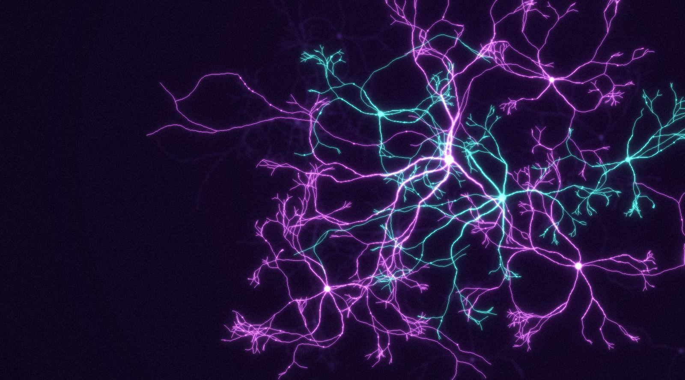

Pilot project
What a night of sleep does to a new memory
A CNAP pilot project is recording brain activity during sleep to learn which memories are kept by morning. The team describes its design and what it plans to test next.

Most of what we learn in a day is gone within a week. Some memories last, and a growing body of research points to sleep as one of the reasons. A pilot project funded by CNAP this year is asking a precise version of that question in adults over 65: which features of a night’s sleep predict what a person still remembers in the morning?
The design
Participants learn a list of word pairs in the evening and are tested twice: once before bed and again after waking. In between, the team records their brain activity across the full night with 64-channel electroencephalography (EEG) in the Cognitive Neuroscience Core’s recording rooms.
The recordings let the team measure the slow oscillations and sleep spindles of deep sleep, two rhythms linked in earlier studies to memory. The question is whether the amount and timing of those rhythms predict how many pairs each person keeps overnight.
Older adults often sleep less deeply. If deep sleep is part of how memories are kept, that change could explain some of what we see in memory with age.
Dr. Amara Okafor, pilot project leader
From recordings to results
A single night of high-density EEG produces gigabytes of data per person. The Neuroinformatics Core helped the team move its analysis pipeline onto Beocat, the university’s high-performance computing cluster, where steps that once took days now run in hours.
The first participants were recorded this fall. The team expects to finish data collection in the spring and to present early results at a national sleep research meeting in April 2027.
What comes next
The second aim tests a practical idea: whether a short afternoon nap can restore overnight retention in participants whose night sleep is fragmented. If it does, the next step would be a larger study, and an application for external funding, which is the milestone every CNAP pilot works toward.
This project was supported by a grant from the National Institute of General Medical Sciences, P20GM113109, of the National Institutes of Health.